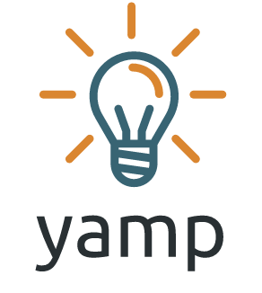

Projects
 This list is a bit crowded. I've been coding for over 10 years, and since childhood, I've always enjoyed creating things and using my creativity. My friends now call my projects YAMP (Yet Another Mirat Project), and I really like the name :)
Kaydet
A simple journaling script I wrote for my own needs. Initially created in 2016, I turned it into a Python package in 2023:
Internet Guzeldir
A Python script that generates a categorized link directory website (web directory) by using an Excel file stored on Google Drive as a data source, along with a sample website created with it.
Eleman
A white-label job listing site with minimal dependencies. It uses Airtable as a database, is dockerized, and runs quickly. Ideal for creating and publishing job listings for your company or organization.
Resm.in
A Q&A platform where users responded with photos. Questions like What's in your drawer? or Do you have a childhood photo ID? encouraged users to reply with pictures. Besides being fun, it also featured recipes and DIY-style photo stories. I built it using Python and Django, with MySQL and Redis for databases, and Backbone.js in a few places.
Linkfloyd
A bookmarking and sharing service designed for following topics instead of people, aiming to bring together those with similar interests. Inspired by the need for a Reddit-like community in Turkey, it eventually developed a dedicated user base. I made lasting connections through it. Built using Python and Django, with MySQL and Redis as databases.
Bavula Ne Koysam?
A simple web application to help create a packing list for travel. It’s still online. I initially wrote it using App Engine, but I plan to rewrite it to function solely as a frontend application.
Filika
A terminal application I wrote for backing up FriendFeed accounts as it was shutting down. It also downloaded all shared images and MP3s. To ensure compatibility on all users' computers, I only used standard Python libraries. It’s no longer functional since FriendFeed has closed, but it may interest those working with APIs and downloads.
FFAnony
A web service that allowed people to post anonymously on FriendFeed using an account named FFAnony. I built it as a one-night project during FriendFeed's active days. It hosted all sorts of content, from gossip and love confessions to playful banter, flirtation, and /r/gonewild/-style photo shares. Our people love gossip, so it became quite popular.